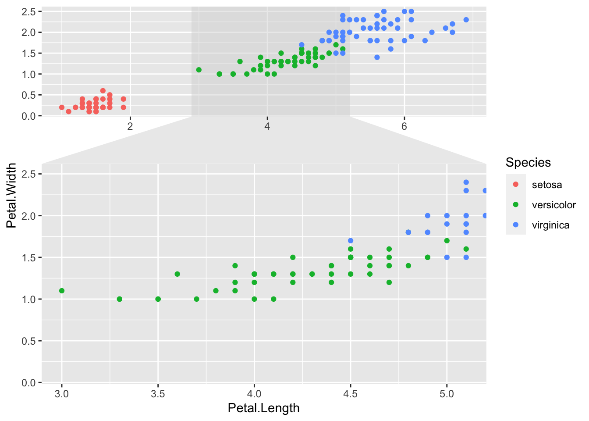
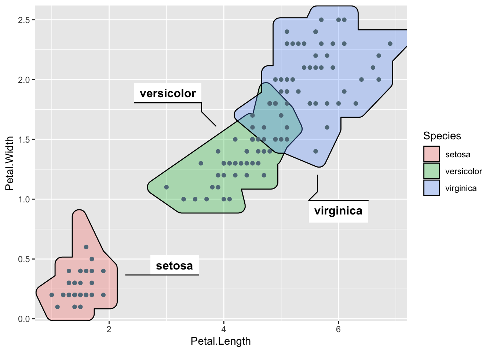
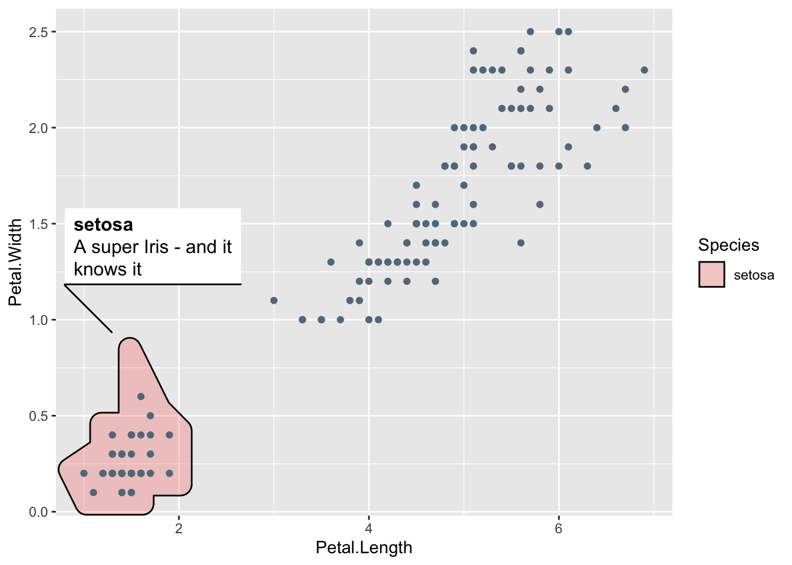
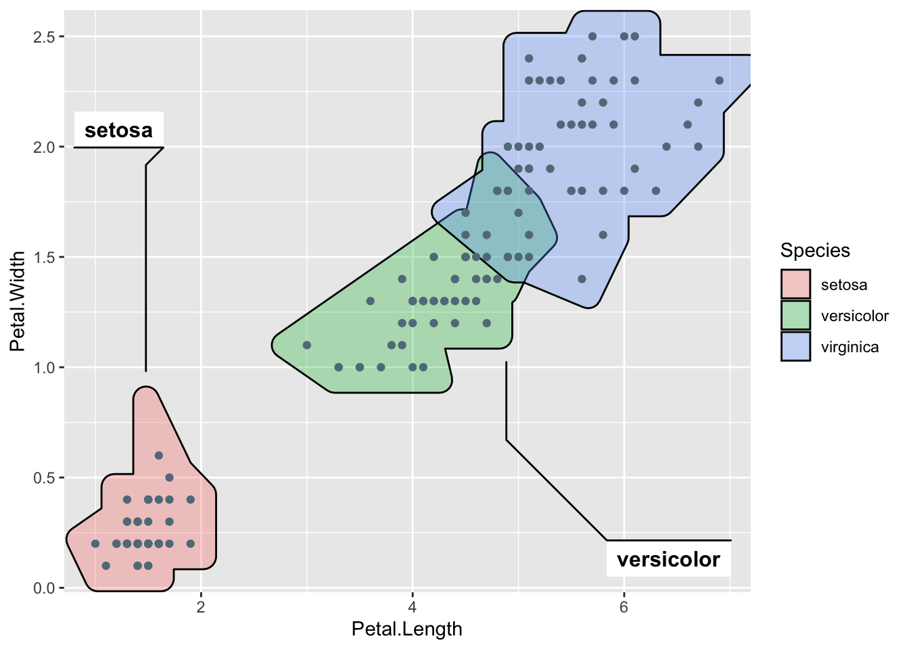
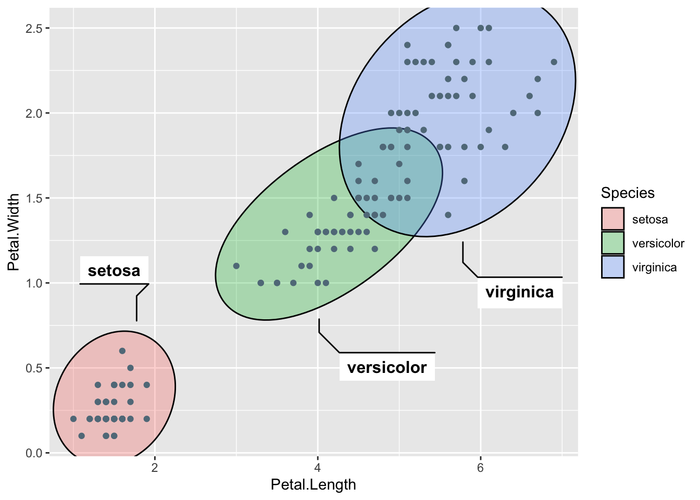
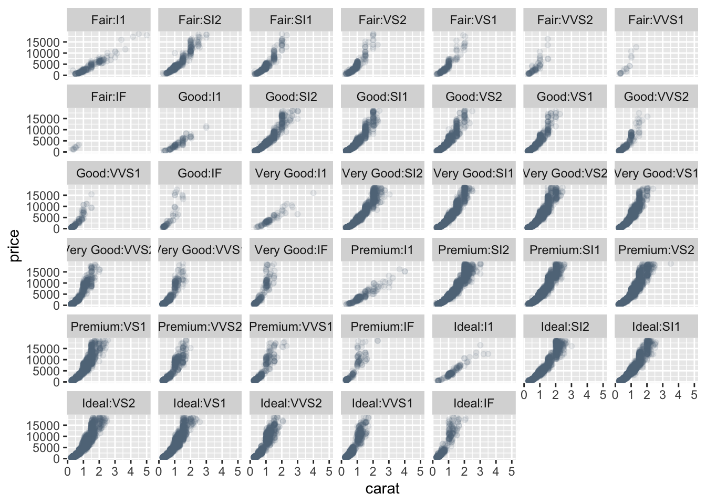
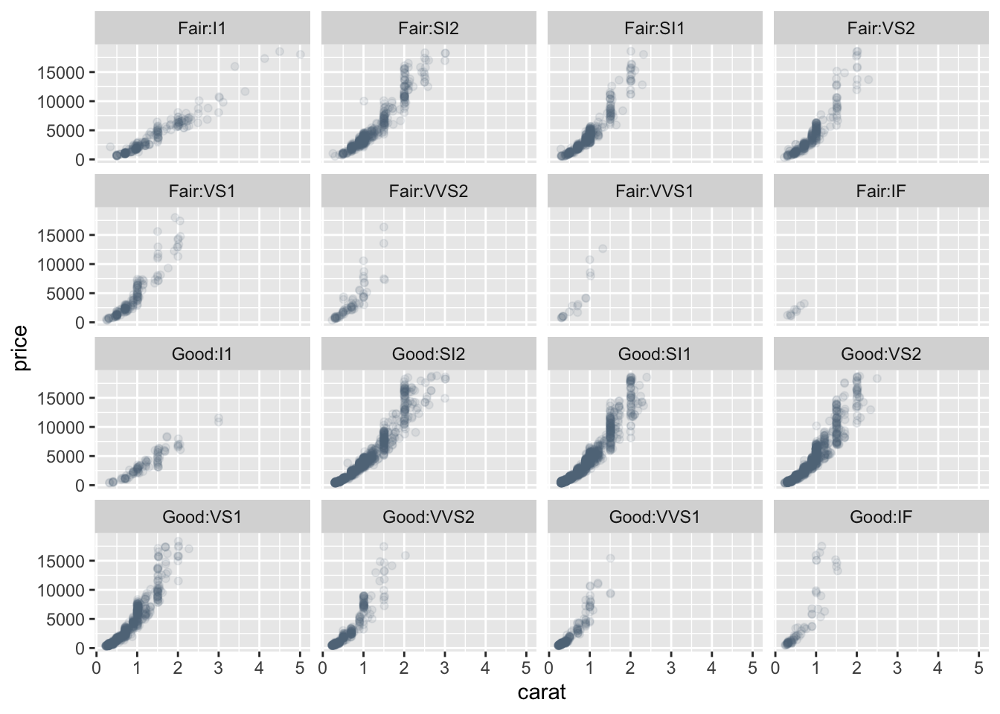

ggforce package
ggforce is a package aimed at providing missing functionality to ggplot2 through the extension system introduced with ggplot2 v2.0.0. Broadly speaking ggplot2 has been aimed primarily at explorative data visualization in order to investigate the data at hand, and less at providing utilities for composing custom plots a la D3.js. ggforce is mainly an attempt to address these “shortcomings” (design choices might be a better description). The goal is to provide a repository of geoms, stats, etc. that are as well documented and implemented as the official ones found in ggplot2.
install.packages("ggforce")facet zoom plot
library(ggforce)
#> Loading required package: ggplot2
ggplot(iris, aes(Petal.Length, Petal.Width, colour = Species)) +
geom_point() +
facet_zoom(x = Species == "versicolor")
library(ggforce)
# Get each axis zoom separately as well
ggplot(iris, aes(Petal.Length, Petal.Width, colour = Species)) +
geom_point() +
facet_zoom(xy = Species == 'versicolor', split = TRUE)
add hull to point plot
This geom lets you annotate sets of points via hulls. While convex hulls are most common due to their clear definition, they can lead to large areas covered that does not contain points. Due to this geom_mark_hull uses concaveman which lets you adjust concavity of the resulting hull. The hull is calculated at draw time, and can thus change as you resize the plot. In order to clearly contain all points, and for aesthetic purpose the resulting hull is expanded 5mm and rounded on the corners. This can be adjusted with the expand and radius parameters.
library(ggforce)
# Add annotation
ggplot(iris, aes(Petal.Length, Petal.Width)) +
geom_mark_hull(aes(fill = Species, label = Species)) +
geom_point()
library(ggforce)
# Long descriptions are automatically wrapped to fit into the width
iris$desc <- c(
'A super Iris - and it knows it',
'Pretty mediocre Iris, but give it a couple of years and it might surprise you',
"You'll never guess what this Iris does every Sunday"
)[iris$Species]
ggplot(iris, aes(Petal.Length, Petal.Width)) +
geom_mark_hull(aes(fill = Species, label = Species, description = desc,
filter = Species == 'setosa')) +
geom_point()
library(ggforce)
# Change the buffer size to move labels farther away (or closer) from the
# marks
ggplot(iris, aes(Petal.Length, Petal.Width)) +
geom_mark_hull(aes(fill = Species, label = Species),
label.buffer = unit(40, 'mm')) +
geom_point()
library(ggforce)
# The connector is capped a bit before it reaches the mark, but this can be
# controlled
ggplot(iris, aes(Petal.Length, Petal.Width)) +
geom_mark_hull(aes(fill = Species, label = Species),
con.cap = 0) +
geom_point()add ellipses to point plot
library(ggforce)
# Add annotation
ggplot(iris, aes(Petal.Length, Petal.Width)) +
geom_mark_ellipse(aes(fill = Species, label = Species)) +
geom_point()
adjustments like above with geom_mark_hull() are
possible.
facet matrix plot
The facet_matrix() facet allows you to put different
data columns into different rows and columns in a grid of panels. If the
same data columns are present in both the rows and the columns of the
grid, and used together with ggplot2::geom_point() it is also known as a
scatterplot matrix, and if other geoms are used it is sometimes referred
to as a pairs plot. facet_matrix is so flexible that these types are
simply a subset of its capabilities, as any combination of data columns
can be plotted against each other using any type of geom. Layers should
use the .panel_x and .panel_y placeholders to map aesthetics to, in
order to access the row and column data.
library(ggforce)
ggplot(mpg) +
geom_point(aes(x = .panel_x, y = .panel_y)) +
facet_matrix(vars(displ, cty, hwy))
Split facet_wrap over multiple plots
This extension to ggplot2::facet_wrap() will allow you to split a facetted plot over multiple pages. You define a number of rows and columns per page as well as the page number to plot, and the function will automatically only plot the correct panels. Usually this will be put in a loop to render all pages one by one.
library(ggforce)
# normal plot
ggplot(diamonds) +
geom_point(aes(carat, price), alpha = 0.1)+
facet_wrap(~ cut:clarity)
library(ggforce)
#paged plot
ggplot(diamonds) +
geom_point(aes(carat, price), alpha = 0.1) +
facet_wrap_paginate(~ cut:clarity,
ncol = 4,#number of columns
nrow = 4,#number of rows
page = 1# the page to draw
)